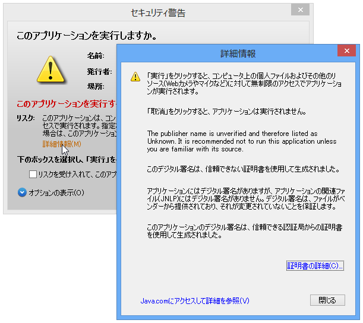
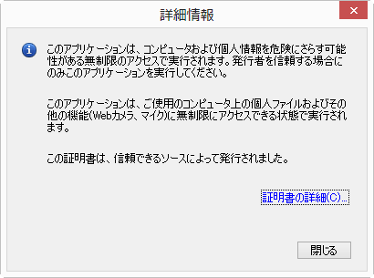
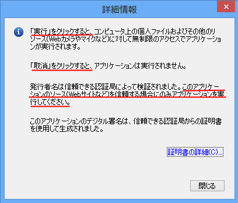
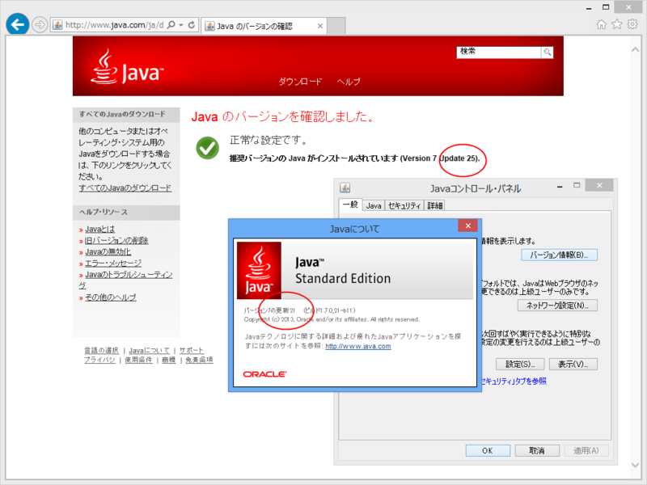

Java SE 7 Update 21 → 25 における比較的地味な変更点
公開日：

開発者向けのセキュリティ機能はこの際置いとくとして、エンドユーザー向けにも結構親切な作りになってきたなと思わせる変更。
Update 21

すごくそっけない。
Update 25

［実行］を押したらどうなるか、［取消］を押したらどうなるか、が明確に書かれている。また、どういう基準で実行していいのかもわかりやすい。地味なダイアログなので、どこまでみてもらえるか多少心もとないけど、書いてあるのとないのとでは大きな違いだ。
この［詳細情報］ダイアログはアプリケーションによって内容は異なるのだけど、数種類のアプリケーションを試して、どれもメッセージが丁寧になっている点には好感をもった。

とはいえ、なんだかなーっていう部分もまだまだ多いのだけど。
それはそうと、Java のアップデートで McAfee がインストールされるようになったと耳にしたのだけど、ウチの環境ではそんなことなかった。毎回インストーラーで更新しているのだけど、アップデーターではそうなるのだろうか。